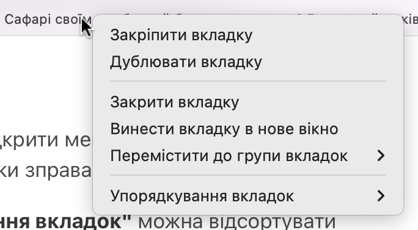

Натисніть правою кнопкою миші на вкладці, щоб відкрити меню, де можна швидко закрити зайві вкладки окрім активної, або закрити всі вкладки зправа.
Також в цьому меню обравши розділ "Упорядкування вкладок" можна відсортувати вкладки за назвою або за вебсайтом. Наприклад всі вкладки ютюб будуть поруч, що спростить навігацію між вкладками.
Також в цьому меню можна створювати групи вкладок для зручного управління.
Всі опції меню вкладок:
- Закріпити вкладку
- Дублювати вкладку
- Закрити вкладку
- Відкрити вкладку в новому вікні
- Перемістити до групи вкладок
- Упорядкування вкладок

Читайте більше статей про використання браузеру Сафарі (Safari) на сторінці Як зробити Сафарі своїм улюблений браузером на мак? Багато лайвхаків..